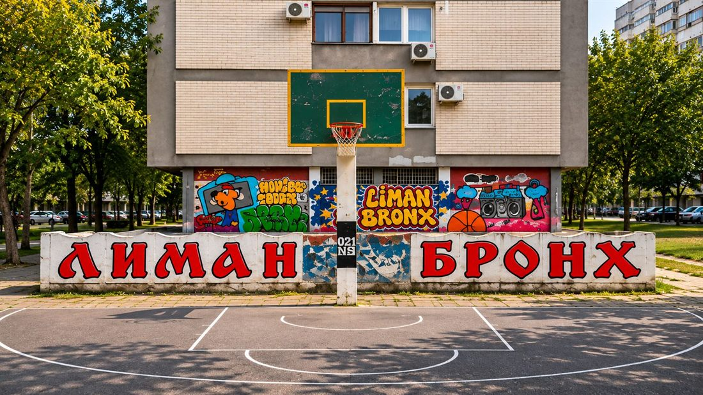
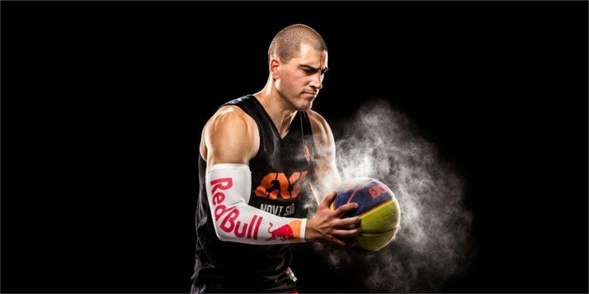
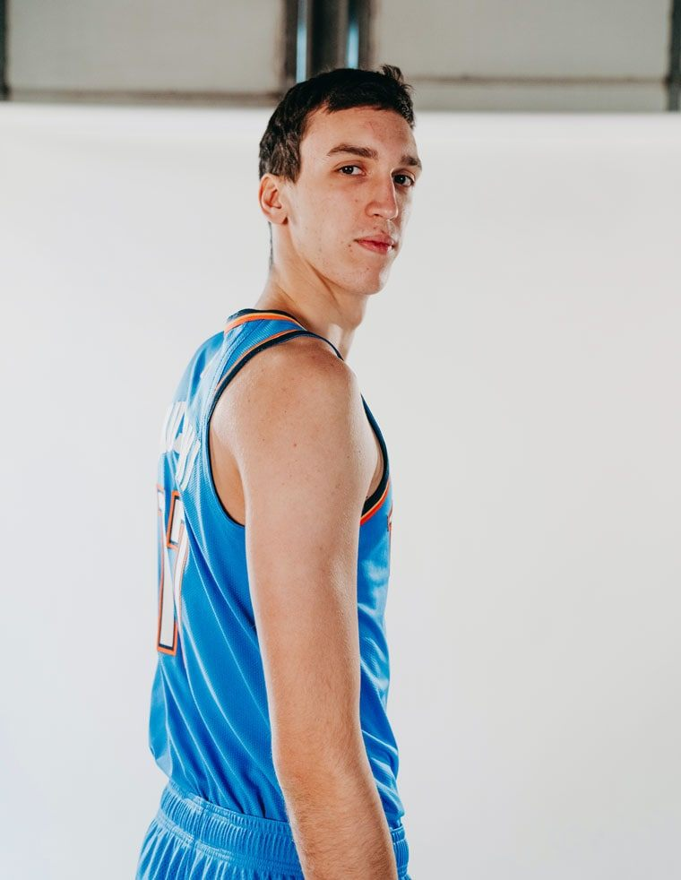
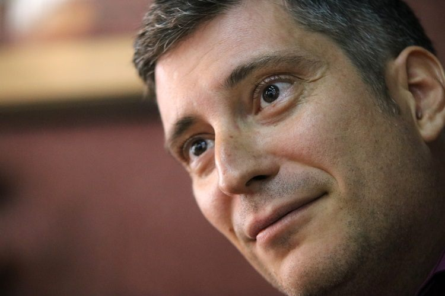
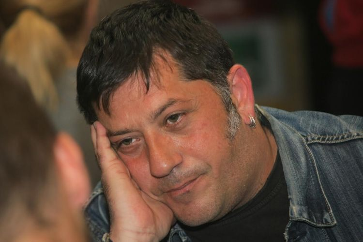
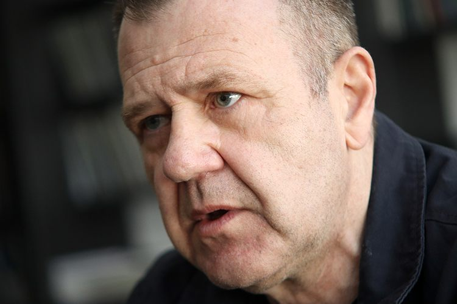
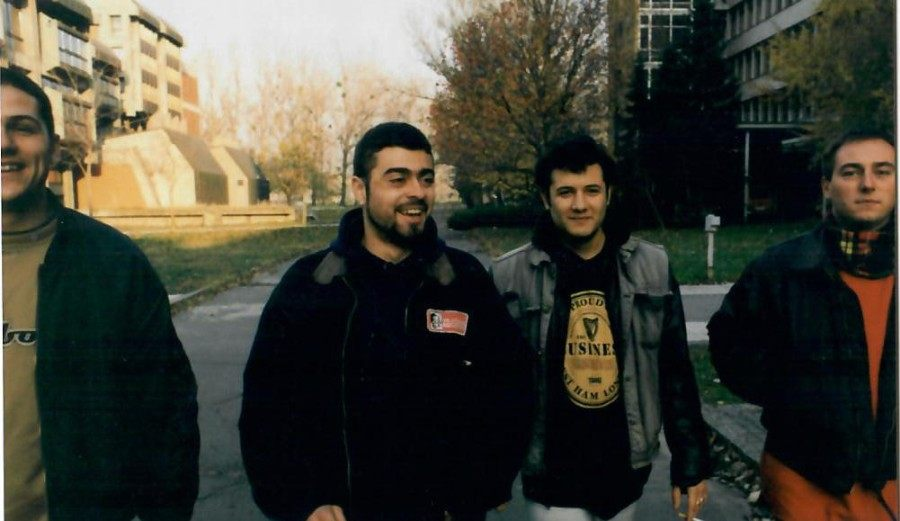
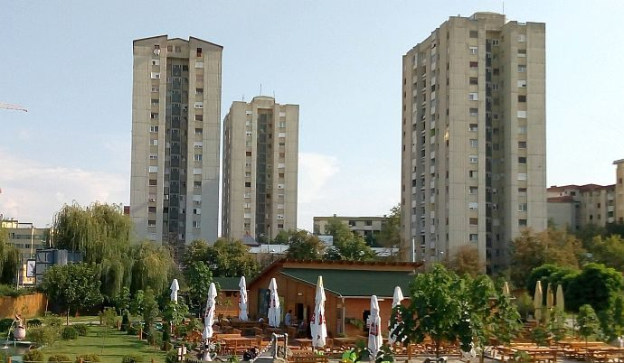

NAŠ KRAJ · LJUDI
Liman 2 - kvart koji je stvarao šampione i rokenrolere
Postoje kvartovi kroz koje samo prolaziš. A postoje i oni koji te obeleže. Liman 2 je jedan od ovih drugih: po njegovim dvorištima igralo se do mraka, na koševima se kovao basket, a iz školskih hodnika i garaža izlazili su ljudi koji su kasnije ostavili trag u sportu, muzici, književnosti i novinarstvu.

Liman 2 nije nastao kao kulisa za velike biografije. Nastao je kao naselje za život - sa zgradama, školama, dvorištima, igralištima i mestima na kojima su se generacije upoznavale, rasle i pravile svoje male svetove. Ali baš iz tih svakodnevnih prostora potekli su ljudi čija su imena danas poznata daleko izvan granica kvarta.
Ovo nije spisak svih poznatih Novosađana, niti pokušaj da se svaki čovek koji je nekada prošao kroz Liman proglasi Limancem. Ovde su ljudi čija je životna priča stvarno vezana za Liman 2 - bilo da su tu odrasli, proveli važan deo detinjstva ili upravo u ovom kraju napravili prve korake.
Od limanskih koševa do svetskog basketa
Dušan Domović Bulut - basket kao način odrastanja

Ako postoji sportista čija se priča prirodno uklapa u sliku Limana, onda je to Dušan Domović Bulut. Jedan od najpoznatijih igrača basketa 3x3 na svetu odrastao je među limanskim koševima, na terenima koji su bili produžetak dvorišta i mesto okupljanja čitavih generacija.
Bulut je u intervjuima govorio o tome kako je basket počeo ispred zgrade i kako je svaki kvart imao svoj ulični koš. Ta svakodnevna igra, bez velike filozofije i bez mnogo opreme, bila je škola iz koje je kasnije izrastao vrhunski takmičar. Osvojio je svetske i evropske titule, a sa reprezentacijom Srbije stigao i do olimpijske medalje u Tokiju.
Njegova priča je možda najbolji primer kako običan limanski teren može da bude početak puta do svetskog vrha.
Aleksej Pokuševski - "Ovde je sve počelo"

Aleksej Pokuševski je još jedno ime koje je Liman 2 upisao na košarkašku mapu. Odrastao je u ovom delu Novog Sada, a komšije i prijatelji pamte ga kao klinca koji je sate provodio na terenu. Kada se 2021. vratio iz svoje prve NBA sezone, dočekali su ga ljudi iz kraja, a na zidu u bloku u kom je stanovao osvanuo je mural sa porukom "Ovde je sve počelo - Kvart u srcu".
Put ga je vodio preko novosadskih klubova Kadet, Stars i Vojvodine do Olimpijakosa, NBA drafta i Oklahoma City Thundera. Za Liman je, međutim, važna i ona jednostavnija slika: dečak, lopta, koš i komšije koje su znale da će jednog dana daleko dogurati.
Nikola Kusturica - nova generacija
Nikola Kusturica pripada novijoj generaciji limanskih sportskih priča. Odrastanje na Limanu 2 i prve košarkaške godine deo su njegovog puta do evropske scene i dresa Barselone. Njegov primer lepo nastavlja priču o kvartu u kojem košarka nije bila samo organizovani trening, već svakodnevni jezik dvorišta.
Za razliku od generacija koje su igrale na betonskim terenima bez mnogo opreme, današnji mladi sportisti imaju drugačije uslove i mnogo raniji kontakt sa profesionalnim sistemom. Ipak, početna slika ostaje slična: lopta, ekipa iz kraja i želja da se bude bolji.
Liman koji je pisao, svirao i čuvao muziku
Miloš Zubac - između poezije i muzike

Miloš Zubac je književnik i muzičar čije je odrastanje bilo vezano za novosadske obale i Limane. U razgovoru za Moj Novi Sad ispričao je da je najpre rastao na Limanu 3, a potom na Limanu 2 - u vreme kada se ovaj deo grada tek oblikovao i kada je, kako se seća, oko novih zgrada još bilo mnogo peska i prostora.
Zubac je godinama vodio muzičku grupu Prkos Drumski, objavljivao knjige i albume, a učestvovao je i u nastanku festivala autorske muzike Poezika i kolektiva Novi Odmetnici. Njegova priča povezuje Liman sa književnošću, kantautorskom muzikom i kreativnim svetom koji se razvijao u Novom Sadu.
Zoran Bulatović Bale - gitara, Luna i novosadski novi talas
Zoran Bulatović Bale jedno je od važnih imena novosadske alternativne i rok scene. Kao gitarista i autor bio je vezan za sastave La Strada i Luna, a njegov rad obuhvata i muziku za pozorište i film, slikarstvo i filmsko stvaralaštvo.
Bale pripada limanskoj priči i generaciji kojoj su škola, komšiluk i gradska alternativna scena bili prirodno okruženje. Njegova biografija podseća da Liman nije stvarao samo sportiste, već i muzičare čiji su snimci i danas zanimljivi novim generacijama slušalaca.
Aleksandar Reljić - Relja: Bronks, pank i novinarstvo

Aleksandar Reljić, poznat kao Relja, možda najbolje dočarava duh limanskog Bronksa. U intervjuu za Moj Novi Sad govorio je o detinjstvu u Strumičkoj ulici, iznad nekadašnjeg mini-marketa Smokva, i o prostoru oko njega u kojem su se okupljala deca, stvarale ekipe i rađao pank.
Relja je bio deo novosadske pank scene i benda Generacija bez budućnosti, a kasnije je izgradio karijeru novinara i autora dokumentarnih filmova. U njegovom sećanju Liman nije samo adresa, nego čitav mali svet: dvorišta, improvizovane bande, preskakanje ograda, drugarstvo i bunt koji je kasnije pronašao drugi izraz u novinarstvu i filmu.
Obrad Boba Škrbić - čovek koji je beležio i gurao novosadski rokenrol

Obrad Boba Škrbić odrastao je na više novosadskih Limana, a svoje najranije limanske uspomene posebno vezuje za Liman 2. U razgovoru za Moj Novi Sad prisećao se dvorišta između Boška Buhe, Dr Ribara i današnjeg Bulevara cara Lazara, fudbala, igre, šumarka i čuvenih utakmica Liman protiv Grbavice.
Kasnije je postao jedno od prepoznatljivih imena novosadskog muzičkog novinarstva. Kroz radio i televizijske emisije, promociju bendova i organizaciju Koncerta godine dao je važan doprinos tome da se za novosadsku rok scenu čuje i van grada. Njegova priča pokazuje da ne mora svako ko je oblikovao scenu da bude na bini - nekada je jednako važno i ko je tu scenu prepoznao, beležio i podržavao.
Limanski metal, pank i noviji talas
Liman 2 nije iznedrio samo košarkaše i muzičare koji su obeležili novi talas. Njegova priča nastavlja se i kroz pank, alternativni rok i metal - žanrove koji su u Novom Sadu decenijama imali svoju publiku, probe, male bine i uporne autore.
Marko "Ramone" Vanović - pank kao dugogodišnja adresa
Marko Ramone Vanović pripada limanskoj muzičkoj priči i generaciji povezanoj sa OŠ "Jovan Popović". Više od dve decenije prisutan je na novosadskoj pank i rok sceni. Svirao je u bendovima UMT, Generacija bez budućnosti, Vrisak generacije, Dva minuta mržnje, Zbogom Brus Li i Bayat, a kasnije i u sastavima Profesor Čonta i Patka i Jolly Little Bunch. Njegova priča je dobar most između školskih bendova i novijih generacija novosadskog rokenrola.
Srđan Sauer - Ben: prvi gitarista Blitzkriega

Srđan Sauer, poznat i kao Ben, odrastao je na Limanu 2 i pripada ljudima iz kvarta koji su ostavili trag u novosadskoj pank istoriji. Bio je prvi gitarista Blitzkriega, a prema sećanju članova benda, tokom rada prve postave napisao je većinu pesama iz tog ranog perioda. U intervjuu za Out of the Darkness pominju ga i kao starog školskog druga sa Limana, koji je uskočio na gitaru kada je bendu zatrebala zamena za jednu svirku u Banjaluci.
Njegova priča je dobar podsetnik da iza poznatih imena bendova često stoje ljudi čiji je doprinos bio ključan u njihovim počecima, čak i kada kasnije nisu ostali u postavi.
Petar "Peca" Banjac - bubnjevi od detinjstva
Petar Banjac, poznatiji kao Peca, odrastao je na Limanu 2. Za bubnjevima Amajlije pojavio se još kao dečak, a kasnije je svirao i u Uvertiri, iz koje je proistekao bend UV. Njegov muzički put obuhvata i autorski rad, saradnje sa drugim muzičarima i muziku za pozorište. U intervjuu za O Radio govorio je o počecima u Amajliji, porodičnoj muzičkoj vezi sa ocem Bogoljubom Banjcem Čombetom i kasnijem radu.
Dušan Mijolić i Stefan Stanić - limanski trag u War Engine-u
Thrash metal bend War Engine donosi još jednu, žešću stranu muzičke priče Limana 2. Dušan Mijolić je gitarista i vokal benda, dok je Stefan Stanić bio njegov bubnjar od osnivanja 2009. do 2026. godine. Obojica su odrasli na Limanu 2. Njihova priča pokazuje da se limanski muzički identitet ne završava na pank i novotalasnim bendovima - u njemu ima mesta i za metal scenu, glasne gitare i dugogodišnji rad u nezavisnoj muzici.
Mihajlo Obrenov - miKKa: veza sa školom i underground scenom
Mihajlo Obrenov, poznat kao miKKa, muzičar, producent i filmski autor, pohađao je OŠ "Jovan Popović". Pokretač je novosadskog industrial sastava dreDDup i autor dokumentarnog filma Kontakt, posvećenog novosadskoj underground sceni. Njegovo mesto u ovoj priči je pre svega veza sa školskom i muzičkom istorijom Limana 2: ne predstavljamo ga kao potvrđenog stanovnika kvarta, već kao nekoga čiji je put prošao kroz JP i čiji je rad zabeležio širu istoriju novosadskog undergrounda.
OŠ "Jovan Popović" - škola iz koje su izlazili bendovi

Ako postoji mesto koje zaslužuje posebno poglavlje u muzičkoj istoriji Limana 2, onda je to Osnovna škola "Jovan Popović". Njena priča o školskim bendovima počinje najmanje 1982. godine, kada su učenici okupljeni oko sastava Eksploziv svirali na glavnom ulazu i u velikom holu škole.
U tekstu objavljenom u Dnevniku 2018. godine naveden je čitav niz bendova čiji su članovi bili učenici škole: Rafal, Eksploziv, Van kontrole, 2MM, Korozija, Generacija bez budućnosti, Blickrig, Auslender, Tri kapljice, Parodoks, Albanska iredenta, Prvobitna zajednica, Jedino rešenje, Martians, Brikheds, Bomber, Pukla bruka, Šoplifters, Veliki mrest, Selfimolejšn, Frontlajn, UMT i Crno ispod nokta.
To nije značilo da su svi članovi tih bendova živeli na Limanu 2 - i tu razliku vredi sačuvati. Ali škola je bila mesto susreta, prvih proba, razmene ideja i stvaranja muzičkih prijateljstava. Kasnije generacije nastavile su tradiciju: u školi su nastajali i bendovi poput Lošeg ukusa, a nastavnik tehničkog Borko Brkić pomagao je učenicima da se okupe, pronađu instrumente i naprave prve korake.
Malo je osnovnih škola koje mogu da se pohvale tako dugom i živom vezom sa lokalnom alternativnom scenom. Za Liman 2, "Jovan Popović" nije bila samo škola - bila je i jedna od njegovih muzičkih radionica.
Važna istorijska napomena: škola je osnovana 1960. godine i prvobitno je radila u staroj zgradi na Limanu 1, u Ulici dr Ilije Đuričića. U novu zgradu u Ravaničkoj ulici, na Limanu 2, preselila se 1975. godine. Upravo se na tu zgradu i generacije učenika koje su je pohađale odnosi priča o limanskoj školskoj rok tradiciji.
Bronks, dvorišta i kvart koji je stvarao svoje ljude

Liman 2 se ne može razumeti samo kroz biografije. Njegov karakter stvarali su i prostori između zgrada: dvorišta u kojima se igralo do mraka, koševi na kojima se okupljalo društvo, prolazi koji su imali svoja nepisana pravila i mesta na kojima su se smenjivale generacije.
Za jedne je to bio basket. Za druge pank, gitara i prva proba. Za treće fudbal, bicikl, šumarak ili odlazak do Dunava. U sećanjima ljudi koji su tu odrasli stalno se vraćaju iste slike - komšiluk koji se poznavao, deca koja su sama organizovala svoje igre i osećaj da je čitav kvart bio jedno veliko dvorište.
Zato je priča o poznatim Limancima zapravo i priča o mestu koje ih je oblikovalo. Bulut i Pokuševski predstavljaju sportsku stranu tog identiteta; Zubac, Bale, Relja i Boba njegovu muzičku i kulturnu stranu. Njihovi putevi su različiti, ali početna tačka ima nešto zajedničko: Liman 2 kao prostor odrastanja, druženja i prvih ideja.
I možda je baš u tome najveća vrednost ovog kvarta. Nisu svi koji su ovde odrasli postali poznati, niti je to potrebno. Liman 2 čine i oni čija imena nikada neće završiti u novinama, ali bez kojih ne bi bilo ni tih dvorišta, ni bendova, ni utakmica, ni priča koje se i danas prepričavaju.
Liman 2 nije samo adresa. To je kvart koji se nosi sa sobom.
Znate još nekog sa Limana 2 ko je ostavio trag u sportu, muzici ili kulturi? Imate fotografiju sa limanskog koša ili sa probe benda? Pošaljite nam, dopunićemo priču.
Pošalji fotografiju ili sećanje